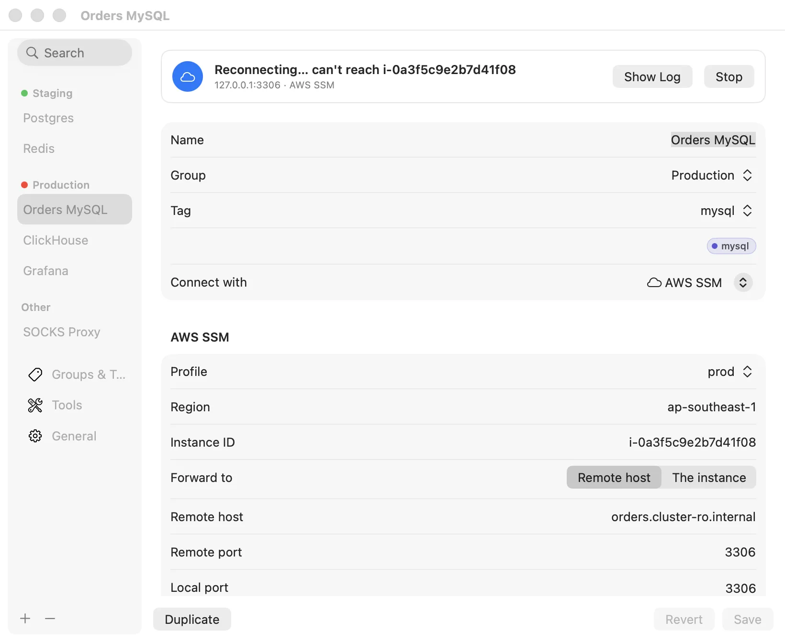
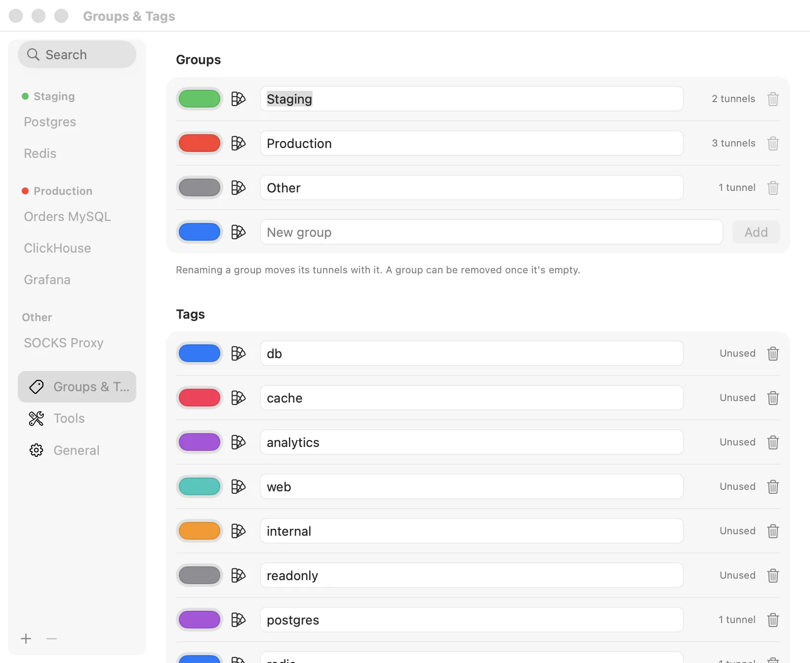

The Settings window
The Settings window is where you edit tunnels and manage everything else: groups, tags and colours, the command-line tools Portkeep runs, and app-wide options.
Open it with Settings in the menu, Edit Tunnel… on a row, or by opening Portkeep again from Finder or Spotlight while it runs.

Sidebar and search#
- Tunnels are listed by name under their group, groups in the order set in Groups & Tags.
- The search field filters by name, local port, group and tag, ignoring case.
- Right-click a group heading for Start All and Stop All in that group, or a tunnel for Duplicate.
- + at the bottom opens Add Tunnel; − removes the selected tunnel after asking (The tunnel stops if it's running.).
- Below the tunnels are Groups & Tags, Tools and General.
A tunnel’s page#
Selecting a tunnel shows a status card and the tunnel’s editor:
- The card shows the live status line, the address and method (127.0.0.1:3306 · AWS SSM), Show Log, and Start or Stop (⌘Return).
- The editor has every field from Adding tunnels, plus a Connect with picker to change the method.
- At the bottom: Duplicate, Copy Diagnostics (see Diagnostics), Revert, and Save (⌘S). Renaming, regrouping or retagging a running tunnel doesn’t restart it; changing how it connects does.
Groups & Tags#

A new install starts with five groups and six tags, each with a colour:
- Groups: Production, Staging, Development, Local, Other.
- Tags: db, cache, analytics, web, internal, readonly.
Each row has a colour well (any colour, through the system colour picker), a button with ten preset colours, the name, how many tunnels use it (Unused, 1 tunnel, 3 tunnels), and a trash button.
- Add: type a name in the New group or New tag row, pick a colour (one is suggested from the name), and press Add. Names must be new, ignoring case.
- Rename: edit the name and press Return. Tunnels move with it. Renaming to a name that already exists merges the two.
- Remove a group: only once it is empty. Until then the trash button is greyed out with Move its tunnels to another group first.
- Remove a tag: any time. It is taken off every tunnel that has it.
You can also type a new group or tag straight into a tunnel’s form. A group typed there has no colour until you give it one here; a tag gets a colour picked from its name. Group colours appear as dots in the menu, the group tabs and this sidebar.
None of this restarts a tunnel: groups and tags are labels only.
Tools#
Lists the six tools Portkeep can run: ssh, aws, session-manager-plugin, kubectl, gcloud and cloudflared. For each:
- a ✓ when the tool was found and is executable, or ⚠ when it wasn’t;
- the path found on your login shell’s
PATH, shown greyed in the field (Not found when there is none); - a field to type a different path (press Return to apply), Choose… to pick the file, and Reset to go back to the one found. A set path is marked Custom, and a path that isn’t an executable file is flagged in orange.
Portkeep reads your login shell’s PATH once at launch (falling back to /opt/homebrew/bin:/usr/local/bin:/usr/bin:/bin if the shell doesn’t answer within 5 seconds). If you install a tool while Portkeep is running, quit and reopen it, or set the path here. A changed path applies the next time each tunnel starts.
General#
- Reopen tunnels that were on when Portkeep quit
- On by default. At launch, Portkeep switches back on the tunnels that were on, including after a crash or a restart. Tunnels set to Connect at login always start, whatever this says.
- Notify when a tunnel drops
- On by default. See Notifications. If notifications for Portkeep are turned off in System Settings, a line says so with an Open System Settings button.
- Tunnels
- Export Tunnels…, Import Tunnels… and Import from SSH Config…. See Import and export.
- Command line tool
- Install Command Line Tool… puts
portkeepon yourPATH. See Command line. - AI assistants
- Copy MCP Config copies the MCP server entry for Claude Desktop, Cursor and other assistants; the Claude Code row shows the
claude mcp addcommand, with Copy Command. See AI assistants. - Report a problem
- Copy Diagnostics for All copies versions, tool paths, and every tunnel’s settings, state and last 50 log lines as Markdown for a GitHub issue. See Diagnostics.
- Updates
- Check for updates automatically is on by default: once a day Portkeep asks GitHub for the latest release. When there is a newer one, a line says Portkeep 0.5.0 is available here and at the top of the menu, with Release Notes and, if you installed with Homebrew, Copy Upgrade Command (
brew upgrade --cask portkeep), otherwise Download. Check for Updates… checks now and says if you are up to date. Nothing else is sent; see Privacy. - Language
- Same as macOS (the default), English, ไทย, 简体中文 or 日本語. Changing it shows Portkeep needs to relaunch to switch language. with a Relaunch Now button. You can also set the language per app in System Settings › General › Language & Region.
Opening at login#
There is no separate “open at login” switch. Portkeep adds itself to your login items while at least one tunnel has Connect at login on, and removes itself when none do. If macOS refuses, Portkeep shows Couldn’t update the login item: … at the top of the menu.
Docs for Portkeep 0.4.0. Something wrong or missing? Open an issue.